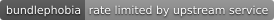

@bem-react/di · 

Dependency Injection (DI) allows you to split React components into separate versions and comfortably switch them in the project whenever needed, e.g., to make a specific bundle.
DI package helps to solve similar tasks with minimum effort:
decouple desktop and mobile versions of a component
implement an experimental version of a component alongside the common one
store components and their auxiliaries (like settings and functions) in a single place
Install
npm i -S @bem-react/di
Quick start
Note! This example uses @bem-react/classname package.
E.g., for a structure like this:
Components/
Header/
Header@desktop.tsx
Header@mobile.tsx
Footer/
Footer@desktop.tsx
Footer@mobile.tsx
App.tsx
First, create two files that define two versions of the App and use different sets of components: App@desktop.tsx and App@mobile.tsx. Put them near App.tsx.
In each App version (App@desktop.tsx and App@mobile.tsx) we should define which components should be used.
Three steps to do this:
Create a registry with a particular id:
const registry = new Registry({ id: cnApp() })
Register all the needed components versions under a descriptive key (keys, describing similar components, should be the same across all the versions):
registry.set('Header', Header)
registry.set('Footer', Footer)
or
registry.fill({
Header,
Footer,
})
or
registry.fill({
'id-1': Header,
'id-2': Footer,
})
Export the App version with its registry of components:
export const AppNewVersion = withRegistry(registry)(AppCommon)
The files should look like this:
1. In App.tsx
import { cn } from '@bem-react/classname'
export const cnApp = cn('App')
export const registryId = cnApp()
2. In App@desktop.tsx
import { Registry, withRegistry } from '@bem-react/di'
import { App as AppCommon, registryId } from './App'
import { Footer } from './Components/Footer/Footer@desktop'
import { Header } from './Components/Header/Header@desktop'
export const registry = new Registry({ id: registryId })
registry.set('Header', Header)
registry.set('Footer', Footer)
export const AppDesktop = withRegistry(registry)(AppCommon)
3. In App@mobile.tsx
import { Registry, withRegistry } from '@bem-react/di'
import { App as AppCommon, registryId } from './App'
import { Footer } from './Components/Footer/Footer@mobile'
import { Header } from './Components/Header/Header@mobile'
export const registry = new Registry({ id: registryId })
registry.set('Header', Header)
registry.set('Footer', Footer)
export const AppMobile = withRegistry(registry)(AppCommon)
Time to use these versions in your app dynamically!
If in App.tsx your dependencies were static before
import React from 'react'
import { cn } from '@bem-react/classname'
import { Header } from './Components/Header/Header'
import { Footer } from './Components/Footer/Footer'
export const App = () => (
<>
<Header />
<Footer />
</>
)
Now the dependencies can be injected based on the currently used registry
with RegistryConsumer
import React from 'react'
import { cn } from '@bem-react/classname'
import { RegistryConsumer } from '@bem-react/di'
// No Header or Footer imports
const cnApp = cn('App')
export const App = () => (
<RegistryConsumer id={cnApp()}>
{({ Header, Footer }) => (
<>
<Header />
<Footer />
</>
)}
</RegistryConsumer>
)
with useRegistry (require react version 16.8.0+)
import React from 'react'
import { cn } from '@bem-react/classname'
import { useRegistry } from '@bem-react/di'
// No Header or Footer imports
const cnApp = cn('App')
export const App = () => {
const { Header, Footer } = useRegistry(cnApp())
return (
<>
<Header />
<Footer />
</>
)
}
So you could use different versions of your app e.g. for conditional rendering on your server side or to create separate bundles
import { AppDesktop } from './path-to/App@desktop'
import { AppMobile } from './path-to/App@mobile'
Replacing components
Components inside registry can be replaced (e.g. for experiments) by wrapping withRegistry(...)(App) with another registry.
import { Registry, withRegistry } from '@bem-react/di'
import { AppDesktop, registryId } from './App@desktop'
import { HeaderExperimental } from './experiments/Components/Header/Header'
const expRegistry = new Registry({ id: registryId })
// replacing original Header with HeaderExperimental
expRegistry.set('Header', HeaderExperimental)
// AppDesktopExperimental will call App with HeaderExperimental as 'Header'
export const AppDesktopExperimental = withRegistry(expRegistry)(AppDesktop)
When App extracts components from registry DI actually takes all registries defined above and merges. By default higher defined registry overrides lower defined one.
If at some point you want to create registry that wan't be overrided just call the constructor with overridable: false.
const boldRegistry = new Registry({ id: cnApp(), overridable: false })
Extending components
You can extend (e.g. for experiments) a component using method extends(...) in overridden registry.
import { Registry, withRegistry, withBase } from '@bem-react/di'
import { AppDesktop, registryId } from './App@desktop'
const expRegistry = new Registry({ id: registryId })
// extends original Header
expRegistry.extends('Header', (BaseHeader) => (props) => (
<div>
<BaseHeader height={200} color={red} />
</div>
))
// AppDesktopExperimental will call App with extended 'Header'
export const AppDesktopExperimental = withRegistry(expRegistry)(AppDesktop)
DI merges nested registries composing and ordinary components for you. So you always can get a reference to previous component's implementation.
Storing other
DI registry may keep not only components but also their settings and any other auxiliaries (like functions).
import { useRegistry } from '@bem-react/di'
const cnHeader = cn('Header')
export const Header = (props) => {
const { theme, showNotification, prepareProps } = useRegistry(cnApp())
// one function is used to fulfill props
const { title, username } = prepareProps(props)
useEffect(() => {
// another function is used inside hook
showNotification()
})
return (
<header className={cnHeader({ theme })}>
<h1>{title}</h1>
<h2>Greetings ${username}</h2>
</header>
)
}